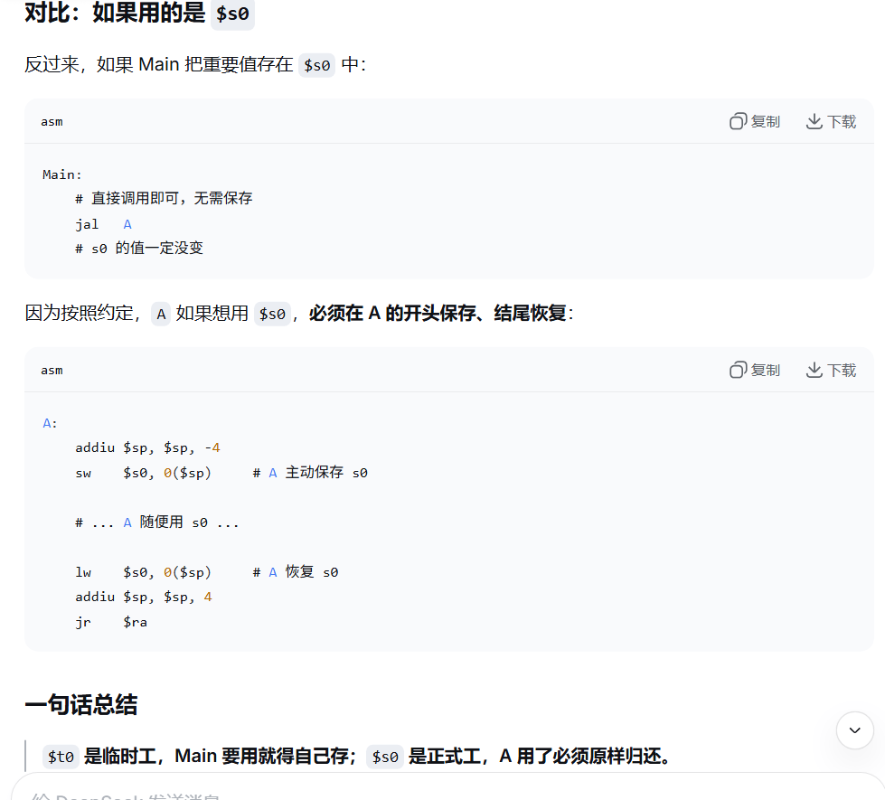
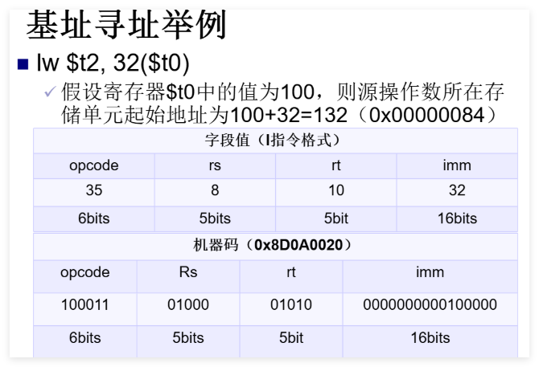
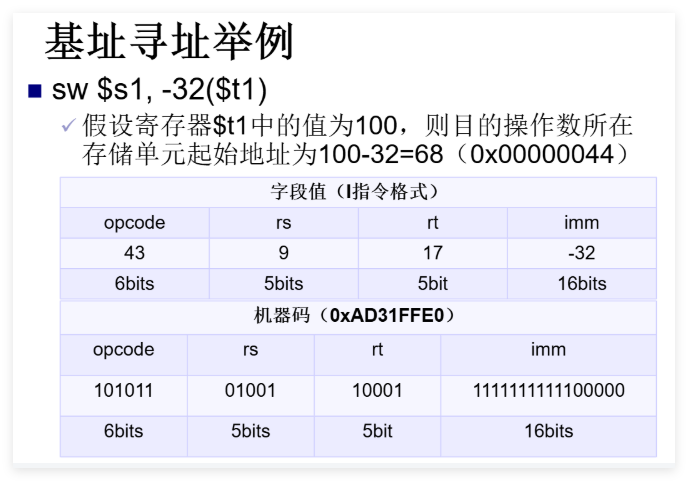
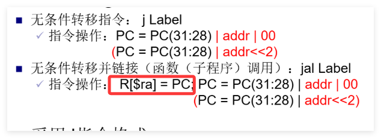
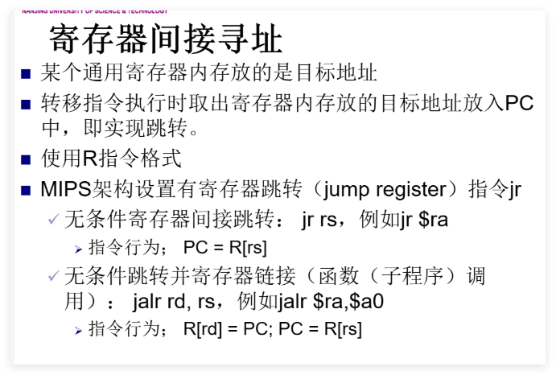
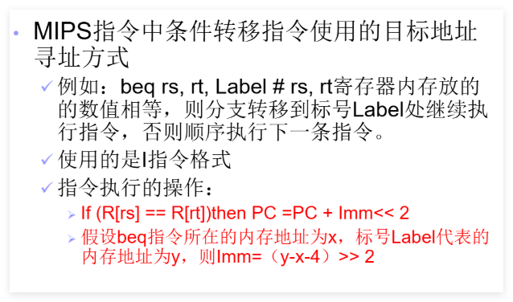

lb rt, offset(rs) # load byte [I]
rs 的值加上符号扩展的 16 位偏移量形成有效地址，从有效地址指向的内存读取 8 位字节，符号扩展后加载到 rt。
lbu rt, offset(rs) # load byte unsigned [I]
rs 的值加上符号扩展的 16 位偏移量形成有效地址，从有效地址指向的内存读取 8 位字节，0扩展后加载到 rt。
lh rt, offset(rs) # load halfword [I]
rs 的值加上符号扩展的 16 位偏移量形成有效地址，从有效地址指向的内存读取 16 位半字，符号扩展后加载到 rt。
若有效地址为奇数则发生地址错误异常，地址必为 2 的倍数（0 bit 为 0）。
lhu rt, offset(rs) # load halfword unsigned [I]
rs 的值加上符号扩展的 16 位偏移量形成有效地址，从有效地址指向的内存读取 16 位半字，0扩展后加载到 rt。
若有效地址为奇数则发生地址错误异常，地址必为 2 的倍数（0 bit 为 0）。
lw rt, offset(rs) # load word [I]
rs 的值加上符号扩展的 16 位偏移量形成有效地址，从有效地址指向的内存读取 字数据 加载到 rt。
地址应为 4 的倍数（末 2 bit 为 0），否则发生地址错误异常。
lui rt, imm # load upper immediate [I]加载立即数到高半字（16bits）
rt = imm << 16 | 0x0000
将 16 位立即数左移 16 位，低 16 位补 0，结果存入 rt。
sb rt, offset(rs) # store byte [I]
有效地址 = rs + 【符号扩展】的 16 位偏移量，将 rt 最低 8 位存入有效地址指向的内存。
sh rt, offset(rs) # store halfword [I]
有效地址 = rs + 【符号扩展】的 16 位偏移量，将 rt 低 16 位存入有效地址指向的内存（地址必为 2 的倍数）。
sw rt, offset(rs) # store word [I]
有效地址 = rs + 【符号扩展】的 16 位偏移量，将 rt 全部 32 位存入有效地址指向的内存（地址必为 4 的倍数）。
mfhi rd # move from HI register[R]mflo rd # move from LO register[R]mthi rs # move to HI register[R]mtlo rs # move to LO register[R]add rd, rs, rt [R]
rs + rt → rd，可能检查补码溢出。
addu rd, rs, rt [R]
不检查补码溢出（一般用于地址运算）。
addi rt, rs, imm [I]
rs + 符号扩展至 32 位的立即数 → rt，会检查补码溢出。
addiu rt, rs, imm [I]
rs + 符号扩展至 32 位的立即数 → rt，不检查补码溢出。
注：
unsigned仅代表不检查补码溢出，不代表零扩展。立即数仍进行【符号扩展】，只是将最高位视为数值位。
sub rd, rs, rt [R]
rs - rt → rd，会检查补码溢出。
subu rd, rs, rt [R]
不检查补码溢出。
mult rs, rt [R]
rs * rt，64 位积：高 32 位 → HI，低 32 位 → LO。操作数视为有符号数，不产生溢出。
结果可用 mfhi / mflo 取出。
multu rs, rt [R]
操作数视为无符号正数，其余同 mult。
div rs, rt [R]
rs ÷ rt：商 → LO，余数 → HI。操作数符号相反时商为负；余数符号与被除数 rs 相同。不产生溢出异常。
除数为 0 时结果未定义。
divu rs, rt [R]
操作数均视为无符号数，商和余数恒为正。其余同 div。
and rd, rs, rt [R]
rs与rt按位与 → rd。
andi rt, rs, imm [I]
rs 与 0扩展至 32 位的立即数按位与 → rt。
注：立即数高 16 位默认为 0，若需非 0 掩码，先用
lui+ori构造。
or rd, rs, rt [R]
按位或 → rd。
ori rt, rs, imm [I]
rs 与 0扩展至 32 位的立即数按位或 → rt。
nor rd, rs, rt [R]
按位或非（先或后取反） → rd。
xor rd, rs, rt [R]
按位异或 → rd。
xori rt, rs, imm [I]
rs 与 0扩展的立即数按位异或 → rt。
sll rd, rt, sa shift left logical[R]
rt 左移 sa 位，空位补 【0】 → rd。
sllv rd, rt, rs shift left logical variable[R]
rt 左移 rs 低 5 位指定的位数，空位补 【0】 → rd。
最多移位 31 位（5 bit 全 1）。
srl rd, rt, sa shift right logical[R]
rt 逻辑右移 sa 位，空位补 【0】 → rd。
srlv rd, rt, rs shift right logical variable[R]
rt 逻辑右移 rs 低 5 位指定的位数，空位补 【0】 → rd。
sra rd, rt, sa shift right arithmetic[R]
rt 算术右移 sa 位，空位用【符号位】填充 → rd。
srav rd, rt, rs shift right arithmetic variable[R]
rt 算术右移 rs 低 5 位指定的位数，空位用【符号位】填充 → rd。
slt rd, rs, rt set if less than[R]
若 rs < rt（有符号比较），rd 置 1，否则置 0。
sltu rd, rs, rt set if less than unsigned[R]
若 rs < rt（无符号比较），rd 置 1，否则置 0。
slti rt, rs, imm set if less than immediate[I]
若 rs < 【符号扩展】的立即数（有符号），rt 置 1，否则置 0。
sltiu rt, rs, imm set if less than immediate unsigned[I]
若 rs < 【符号扩展】的立即数（无符号），rt 置 1，否则置 0。
j label [J]
PC 高 4 位拼接 26 位立即数左移 2 位 → PC。
左移两位-->指令均为32位，以字为单位，故0、1bit必为0
指令的增加，一般不会影响到高四位
jal label jump and link[J]
将
PC当前值保存在$ra中，然后将【当前PC的前四位】与【26位立即数左移两位之后】连接起来形成一个地址，加载到PC。
jalr rd, rs jump and link register[R]
将返回地址（PC+4）存入 rd，然后跳转至 rs 中的地址。
使用前
rs必须已加载有效地址。
jr rs jump register unconditionally[R]
跳转至 rs 中的地址。常用于函数返回：jr $ra。
beq rs, rt, label branch if equal[I]
若 rs == rt，跳转至 label。
bne rs, rt, label branch if not equal[I]
若 rs != rt，跳转至 label。
bgez rs, label branch if greater than or equal to zero[I]
若 rs >= 0，跳转至 label。
bgezal rs, label branch if greater than or equal to zero and link[I]
若 rs >= 0，将返回地址存入 $ra 后跳转。
bgtz rs, label branch if greater than zero[I]
若 rs > 0，跳转。
blez rs, label branch if less than or equal to zero[I]
若 rs <= 0，跳转。
bltz rs, label branch if less than zero[I]
若 rs < 0，跳转。
bltzal rs, label branch if less than zero and link[I]
若 rs < 0，将返回地址存入 $ra 后跳转。
syscall [R]addu rd, $zero, rs
bgez rs, 1
sub rd, $zero, rs
beq rs, $zero, label
slt $at, rs, rt
beq $at, $zero, label
sltu $at, rs, rt
beq $at, $zero, label
slt $at, rt, rs
bne $at, $zero, label
sltu $at, rt, rs
bne $at, $zero, label
slt $at, rt, rs
beq $at, $zero, label
sltu $at, rt, rs
beq $at, $zero, label
slt $at, rs, rt
bne $at, $zero, label
sltu $at, rs, rt
bne $at, $zero, label
bne rs, $zero, label
bgez $zero, label
# 或
beq $zero, $zero, label
bne rt, $zero, ok
break $zero
ok:
div rs, rt
mflo rd
bne rt, $zero, ok
break $zero
ok:
divu rs, rt
mflo rd
lui $at, %hi(label)
ori rd, $at, %lo(label)
#符号 %hi() 和 %lo() 是 MIPS 汇编器提供的运算符，用来在汇编阶段把一个 32 位地址拆分成高 16 位和低 16 位。
lui $at, %hi(value)
ori rd, $at, %lo(value)
ori rd, $zero, value
addu rd, $zero, rs
mult rs, rt
mflo rd
mult rs, rt
mfhi $at
mflo rd
sra rd, rd, 31
beq $at, rd, ok
break $zero
ok:
mflo rd
multu rs, rt
mfhi $at
beq $at, $zero, ok
break $zero
ok:
mflo rd
sub rd, $zero, rs
subu rd, $zero, rs
or $zero, $zero, $zero
nor rd, rs, $zero
bne rt, $zero, ok
break $zero
ok:
div rs, rt
mfhi rd
注意老式写法：
bne rt,$0,8 # 如果 rt != 0，跳过 8 条指令（即直接跳到 mfhi）
break $0
div rs,rt
mfhi rd
bne rt, $zero, ok
break $zero
ok:
divu rs, rt
mfhi rd
subu $at, $zero, rt
srlv $at, rs, $at
sllv rd, rs, rt
or rd, rd, $at
srl $at, rs, 32-sa
sll rd, rs, sa
or rd, rd, $at
subu $at, $zero, rt
sllv $at, rs, $at
srlv rd, rs, rt
or rd, rd, $at
sll $at, rs, 32-sa
srl rd, rs, sa
or rd, rd, $at
beq rt, rs, yes
ori rd, $zero, 0
beq $zero, $zero, skip
yes:
ori rd, $zero, 1
skip:
bne rt, rs, yes
ori rd, $zero, 1
beq $zero, $zero, skip
yes:
slt rd, rt, rs
skip:
bne rt, rs, yes
ori rd, $zero, 1
beq $zero, $zero, skip
yes:
sltu rd, rt, rs
skip:
slt rd, rt, rs
sltu rd, rt, rs
bne rt, rs, yes
ori rd, $zero, 1
beq $zero, $zero, skip
yes:
slt rd, rs, rt
skip:
bne rt, rs, yes
ori rd, $zero, 1
beq $zero, $zero, skip
yes:
sltu rd, rs, rt
skip:
beq rt, rs, yes
ori rd, $zero, 1
beq $zero, $zero, skip
yes:
ori rd, $zero, 0
skip:
| 编号 | 助记符 | 用途说明 | 英文全称 / 翻译 |
|---|---|---|---|
| 0 | $zero |
恒为 0，写入无效 | zero constant |
| 1 | $at |
汇编器临时使用（展开伪指令） | assembler temporary |
| 2-3 | $v0 ~ $v1 |
函数返回值 | value returned |
| 4-7 | $a0 ~ $a3 |
函数实参（前 4 个） | arguments |
| 8-15 | $t0 ~ $t7 |
临时寄存器，调用者保存 | temporary |
| 16-23 | $s0 ~ $s7 |
保存寄存器，被调用者保存 | saved |
| 24-25 | $t8 ~ $t9 |
临时寄存器（同 t0~t7） | temporary |
| 26-27 | $k0 ~ $k1 |
保留给 OS 内核，异常处理用 | kernel reserved |
| 28 | $gp |
全局数据区指针 | global pointer |
| 29 | $sp |
栈顶指针 | stack pointer |
| 30 | $fp / $s8 |
帧指针（或作为第 9 个保存寄存器） | frame pointer / saved |
| 31 | $ra |
函数返回地址 | return address |
| 名称 | 用途说明 | 翻译 |
|---|---|---|
| PC | 程序计数器，存放下一条指令地址 | Program Counter |
| HI | 乘法结果高 32 位 / 除法余数 | HIgh word |
| LO | 乘法结果低 32 位 / 除法商 | LOw word |
| IR | 指令寄存器，存放当前执行的机器码 | Instruction Register |
as），也叫汇编器/解释器。int, char, float）带有语义和检查（如不能把 float 直接当指针用）。$0 ~ $31）。$a0 ~ $a3（编号 4~7）。超过 4 个参数时，其余参数通过堆栈传递。
$v0 ~ $v1（编号 2~3）。通常 32 位返回值仅用 $v0，64 位返回值使用 $v0 和 $v1 共同存放。
$t0 ~ $t9 是临时寄存器，按照 MIPS 调用约定，被调用函数（A）不需要保存它们。
因此 Main 必须在调用 A 之前自己把 $t0 保存到栈中，A 返回后再从栈中恢复。
addiu $sp, $sp, -4
sw $t0, 0($sp) # 保存 t0
jal A
lw $t0, 0($sp) # 恢复 t0
addiu $sp, $sp, 4

可以理解为函数传形参、引用等
$s0 ~ $s7 是保存寄存器，调用约定规定被调用函数（A）必须保证这些寄存器在返回时与调用前一致。
因此 Main 无需额外保存，A 若需要使用 $s0，会在自己的代码开头保存并在返回前恢复。
Main 侧无需任何操作，直接调用即可。
$k0, $k1（编号 26~27），用于异常处理。$at（编号 1），汇编器在展开伪指令时临时使用。$at。$ra（编号 31）。$sp（编号 29）。.asm 源文件。.o 或 .obj）。_start 或 main 入口开始逐条取指、译码、执行。64KB = 2^16 字节，地址范围从 0x0000 到 0xFFFF。
通常分为：
简易图示（按字节编址）：
0x0000 ┌────────────┐
│ Text │ 代码段
0x???? ├────────────┤
│ Data │ 已初始化数据
0x???? ├────────────┤
│ BSS │ 未初始化数据
0x???? ├────────────┤
│ Heap │ → 向高地址增长
│ ... │
│ Stack │ ← 向低地址增长
0xFFFF └────────────┘
0x0003：对齐无要求，可直接读取该地址 1 字节。0x0002：半字对齐要求地址为 2 的倍数，0x0002 符合，可读取 0x0002 和 0x0003 两个字节组成半字。0x0001：字对齐要求地址为 4 的倍数，0x0001 不符合，将引发地址错误异常。典型 MIPS 进程内存布局（从低地址到高地址）：
R 格式共 6 个字段：
| op (6) | rs (5) | rt (5) | rd (5) | sa (5) | funct (6) |
|---|
例子：add $t0, $t1, $t2
op=000000, funct=100000。
I 格式共 4 个字段：
| op (6) | rs (5) | rt (5) | immediate (16) |
|---|
例子：lw $t0, 4($sp)
op=100011, rs=$sp, rt=$t0, imm=0004。
J 格式共 2 个字段：
| op (6) | address (26) |
|---|
例子：j label
op=000010, address 为目标地址的高 26 位（实际地址需左移 2 位后与 PC 高 4 位拼接）。
以 R 型 add $t0, $t1, $t2 为例：
rs、rt 读取 $t1、$t2 的值。rd 指定的 $t0。I 型和 J 型在地址计算和目标写入上有所区别，但基本五阶段流水线结构相同。
MIPS 支持 5 种操作数寻址方式： 针对操作数的寻址
addi $t1,$t2,5)add $t0,$t1,$t3)
存储单元寻址lw/sw）。基地址(存放在某个【通用】寄存器中)+位移量(在指令中以16bits补码数存放)$(base\ addressing+displacement)$


针对目标地址的寻址 分支转移：
实现高级语言的分支、循环以及函数调用与返回等语言成分必不可少的操作。
实质时改变了程序顺序执行指令的行为（PC增量定值的行为），通过修改PC值实现分支转移功能。
j（无条件转移指令）/jal（无条件转移指令并链接），26 位地址左移 2 位与 PC 高 4 位拼接。


实际上是I指令格式，imm在静态编译时，通过公式imm=(y-x-4)>>2（当前地址与label中间隔imm条指令）算得。然后在动态运行时在IR中填入这个imm
| 寻址方式 | 操作数位置 | 寻址过程 | 指令格式 | MIPS 典型指令 | 通俗类比 | 为何叫这个名字 |
|---|---|---|---|---|---|---|
| 立即数寻址 | 指令内部 | 直接从指令码中提取常数 | I 型 | addi $t0, $t1, 5 |
口袋里直接摸出 5 块钱 | 数据立即可得，就在指令里 |
| 寄存器寻址 | 寄存器 | 直接读寄存器文件 | R 型 | add $t0, $t1, $t2 |
从抽屉里拿东西 | 数据在寄存器里，选号即用 |
| 基址寻址 (基址+偏移) |
内存 | 地址 = 寄存器值 + 偏移量 | I 型 | lw $t0, 100($t1) |
以书架第一层为基准，往右数 10 本书 | 寄存器提供基地址，偏移量定位具体位置 |
| 寄存器间接寻址 | 内存 | 地址 = 寄存器值 | R 型 (跳转类) |
jr $rajalr $t0 |
纸条上写着门牌号，按号去找 | 不直接给数据，给的是存放数据的地址（间接） |
| 伪直接寻址 | 指令附近 (256MB 内) |
地址 = PC[31:28] || imm<<2 | J 型 | j labeljal label |
说“大厦 12 楼”，默认还在本栋楼 | 看起来像直接给 26 位地址，实则要靠 PC 高 4 位拼凑（伪） |
| 相对寻址 | 指令附近 | 地址 = PC + 4 + imm<<2 | I 型 | beq $t0, $t1, label |
“往前走 3 步”而不是“去 403 房间” | 目标是相对于当前 PC 的位移量 |
addi, ori, lui）。add, sub, and）和部分 I 格式（如 beq 的源操作数）。offset(rs)，如 lw $t0, 8($sp)。lb, lbu, lh, lhu, lw, sb, sh, sw。用于改变程序控制流（跳转和分支）。MIPS 中目标地址寻址分为：
j, jal）：快速跳转到 256MB 范围内的绝对地址。beq, bne 等）：相对于当前 PC 的偏移跳转，适合短距离条件分支。jr $ra 或 jalr $t0 实现寄存器间接跳转，即 PC ← rs。j, jal）。imm = (目标地址 - (当前 PC + 4)) >> 2。label。lb, lbu, lh, lhu, lwlwu：因为 lw 本身就是加载 32 位字，已经填满目标寄存器，无需扩展。sb, sh, swmfhi rd，R 格式。mtlo rs，R 格式。宏指令（伪指令）是汇编器提供的便利助记符，在硬件中不存在对应的机器码。汇编时会被展开为一条或多条真实的机器指令。例如 li $t0, 100 → addiu $t0, $zero, 100。
无法用单条指令直接将 32 位立即数写入内存，需要分两步：
lui + ori）。sw 将寄存器值存入内存。lui $at, 0x1234
ori $at, $at, 0x5678 # $at = 0x12345678
sw $at, 0($t0) # 存入 t0 指向的内存
16 位立即数可用 ori 或 addiu 直接加载到寄存器，再 sw 存出：
ori $at, $zero, 0x1234
sw $at, 0($t0)
0xfffffff 实际是 0x0fffffff（28 位有效），需要 lui + ori：
lui $t0, 0x0fff # 高 16 位：0x0fff
ori $t0, $t0, 0xffff # 低 16 位：0xffff
最终 $t0 = 0x0fffffff。
move rd, rsaddu rd, $zero, rsrs 加 0 的结果放入 rd）add, adduaddi, addiuu：不检测补码溢出，结果直接截断 32 位。u：可能引发溢出异常（取决于具体实现）。sub：R 型，检测溢出。subu：R 型，不检测溢出。subi 指令，节省了指令编码空间。addiu rt, rs, -immaddiu 中会【符号扩展】，负数可以正确参与运算。neg rd, rs（求补）：展开为 sub rd, $zero, rs。negu rd, rs（无符号求补）：展开为 subu rd, $zero, rs。不能。
-2^31 的补码是 0x80000000，其相反数 2^31 在 32 位有符号整数中溢出（最大正值是 2^31-1）。因此对 0x80000000 求补结果仍是自身，且带溢出检测的 neg 会触发异常。
mult (有符号), multu (无符号) —— R 格式。div (有符号), divu (无符号) —— R 格式。mul rd, rs, rt：mult + mflo。mulo rd, rs, rt：带溢出检查的乘法，若 HI ≠ rd 的【符号扩展】则溢出。mulou rd, rs, rt：无符号乘法溢出检查，若 HI ≠ 0 则溢出。div rd, rs, rt：div rs, rt + mflo rd。divu rd, rs, rt：divu rs, rt + mflo rd。rem rd, rs, rt：div + mfhi。remu rd, rs, rt：divu + mfhi。and：R 型。andi：I 型（立即数 0扩展）。or：R 型。ori：I 型（立即数 0扩展）。xor：R 型。xori：I 型（立即数 0扩展）。nor：对 rs 和 rt 按位或后取反，R 格式。not，使用宏指令 not rd, rs 展开为 nor rd, rs, $zero。sll：移位量固定（sa 字段），R 格式。sllv：移位量可变（取自 rs 低 5 位），R 格式。srl：固定移位量，R 格式。srlv：可变移位量，R 格式。sra：固定移位量，R 格式。srav：可变移位量，R 格式。sll 或 sllv 即可。rol rd, rs, rt（rt 指定移位数）：
subu $at, $zero, rt # $at = -rt (补码)，其低5位等效于 32 - rt
srlv $at, rs, $at # 取出将被移出的高位部分并右移对齐
sllv rd, rs, rt # 左移剩余部分
or rd, rd, $at # 合并
MIPS 进行可变移位（如 srlv）时，只读取 rs 寄存器的低 5 位（即 rt mod 32）。
假设我们要计算 32 - rt:
在 32 位补码运算中，-rt 的二进制低 5 位，恰好等于 (32 - rt) mod 32 的低 5 位。(只截取低5位，且无符号)
ror rd, rs, rt：
subu $at, $zero, rt # $at = 32 - rt
sllv $at, rs, $at # 取出将被移出的低位部分并左移对齐
srlv rd, rs, rt # 右移剩余部分
or rd, rd, $at
slt, sltuslti, sltiuseq, sne, sgt, sgtu, sge, sgeu, sle, sleuslt/sltu 及分支指令组合实现。j, jal：J 格式。jr, jalr：R 格式。均为 I 格式：
bgez, bgezal, bgtz, blez, bltz, bltzalbeq, bneb label：展开为 bgez $zero, label 或 beq $zero, $zero, label。b label 是相对寻址，跳转范围有限（±128KB）；j label 是伪直接寻址，范围大（256MB）。两者寻址方式不同。beqz, bnez, bge, bgeu, bgt, bgtu, ble, bleu, blt, bltuslt/sltu 与 beq/bne，例如 blt rs, rt, label：slt $at, rs, rt
bne $at, $zero, label
syscall（R 格式，funct=001100）。$v0。$a0 ~ $a3。syscall。$v0 读取。例如打印整数：
li $v0, 1 # 调用号 1：print_int
move $a0, $t0 # 要打印的值
syscall
| 服务名称 | 服务代码 ($v0) | 需要的参数 | 返回值 | 功能说明 |
|---|---|---|---|---|
| print_int | 1 | $a0 = 要打印的整数 |
无 | 以十进制形式打印一个整数到控制台 [citation:5] |
| print_float | 2 | $f12 = 要打印的单精度浮点数 |
无 | 打印一个单精度浮点数 [citation:5] |
| print_double | 3 | $f12 = 要打印的双精度浮点数 |
无 | 打印一个双精度浮点数 [citation:5] |
| print_string | 4 | $a0 = 要打印的字符串地址 (以 null 结尾) |
无 | 打印一个字符串到控制台 [citation:2] |
| read_int | 5 | 无 | $v0 = 读取的整数 |
从控制台读取一行输入，并将其解析为整数返回 [citation:2] |
| read_float | 6 | 无 | $f0 = 读取的浮点数 |
读取一个单精度浮点数 [citation:5] |
| read_double | 7 | 无 | $f0 = 读取的双精度浮点数 |
读取一个双精度浮点数 [citation:5] |
| read_string | 8 | $a0 = 存储字符串的缓冲区地址$a1 = 缓冲区长度（字节数） |
无 (数据写入缓冲区) | 从控制台读取一行字符串到指定缓冲区 [citation:2] |
| sbrk | 9 | $a0 = 需要分配的字节数 |
$v0 = 分配的内存块首地址 |
在堆上分配一块内存 [citation:5] |
| exit | 10 | 无 | 无 | 终止程序执行 [citation:2] |
| print_char | 11 | $a0 = 要打印的字符 (ASCII码) |
无 | 打印一个字符到控制台 [citation:5] |
| read_char | 12 | 无 | $v0 = 读取的字符 (ASCII码) |
从控制台读取一个字符 [citation:5] |
| time | 30 | 无 | $a0 = 系统时间低32位$a1 = 系统时间高32位 |
获取当前系统时间（毫秒级） [citation:5] |
| sleep | 32 | $a0 = 休眠的毫秒数 |
无 | 让程序暂停执行指定的毫秒数 [citation:5] |
| print_hex | 34 | $a0 = 要打印的整数 |
无 | 以8位十六进制形式打印整数（左侧补零） [citation:5] |
| print_binary | 35 | $a0 = 要打印的整数 |
无 | 以32位二进制形式打印整数（左侧补零） [citation:5] |
| print_unsigned | 36 | $a0 = 要打印的整数 |
无 | 以无符号十进制形式打印整数 [citation:5] |
| random_int | 41 | $a0 = 随机数生成器ID (通常为0) |
$a0 = 生成的伪随机整数 |
生成一个均匀分布的伪随机整数 [citation:5] |
| random_range | 42 | $a0 = 随机数生成器ID (通常为0)$a1 = 上限值 |
$a0 = 生成的伪随机整数 |
生成一个在 [0, 上限值) 范围内的伪随机整数 [citation:5] |
| confirm_dialog | 50 | $a0 = 提示消息字符串地址 |
$a0 = 用户选择 (0:Yes, 1:No, 2:Cancel) |
弹出带有 Yes/No/Cancel 的确认对话框 [citation:5] |
| input_int_dialog | 51 | $a0 = 提示消息字符串地址 |
$a0 = 输入的整数$a1 = 状态码 (0:成功, -1/-2/-3:失败) |
弹出输入对话框让用户输入一个整数 [citation:5] |
| message_dialog | 55 | $a0 = 消息字符串地址$a1 = 对话框类型 (0:错误, 1:信息, 2:警告, 3:问号) |
无 | 弹出一个消息提示对话框 [citation:5] |